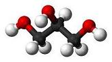
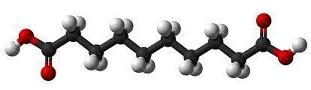
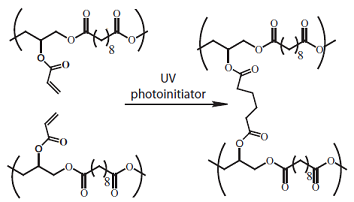
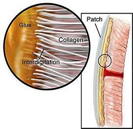

Engineering the Glue
Engineering Goal and Criteria
The goal of the project was to engineer an improved bioadhesive that:
- adheres in wet environments in an easily controlled manner
- withstands the dynamic movement of muscles and blood
- does not damage cardiac tissue
- is non-toxic and biodegradable
- provides a strong, watertight seal
Molecular Composition and Properties
First, the researchers chose to study hydrophobic substances because they do not attract water, and thus, the dynamic, wet environment would not interfere with the its adhesive abilities. They hypothesized that light-triggered, hydrophobic substances would be easier to use. They mixed Irgacure 2959, a light-activation molecule, with the poly-glycerol sebacate acrylate, a hydrophobic polymer which consists of two naturally occuring molecules: glycerol and sebacic acid.
|  |  |
Figure 3: The structure of glycerol (left) and sebacic acid (right), the two main naturally occuring components of their glue. Glycerol is a basic building block of lipids, and sebacic acid is a molecule that is made in our bodies during the production of fatty acids.
Light Activation
|  |
Figure 4: Once the glue was placed on the wound, UV light was applied with an OmniCure S1000 UV light source machine by Lumen Dynamics Group, Inc, causing the molecules to form a strong bond, while maintaining a flexible shape.
Thus, the researchers simply had to shine a UV light to turn the viscous liquid into a flexible solid. Because the glue was viscous before setting, it could seep in between the collagen fibers of the target tissue, increasing the adhesion strength.

Figure 5: